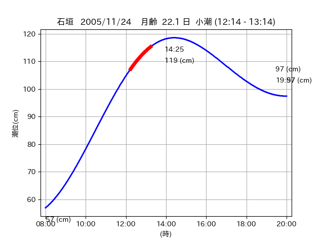

<!DOCTYPE html>
<html>
<head>
    
    <meta http-equiv="content-type" content="text/html; charset=UTF-8" />
    
        <script>
            L_NO_TOUCH = false;
            L_DISABLE_3D = false;
        </script>
    
    <style>html, body {width: 100%;height: 100%;margin: 0;padding: 0;}</style>
    <style>#map {position:absolute;top:0;bottom:0;right:0;left:0;}</style>
    <script src="https://cdn.jsdelivr.net/npm/leaflet@1.9.3/dist/leaflet.js"></script>
    <script src="https://code.jquery.com/jquery-3.7.1.min.js"></script>
    <script src="https://cdn.jsdelivr.net/npm/bootstrap@5.2.2/dist/js/bootstrap.bundle.min.js"></script>
    <script src="https://cdnjs.cloudflare.com/ajax/libs/Leaflet.awesome-markers/2.0.2/leaflet.awesome-markers.js"></script>
    <link rel="stylesheet" href="https://cdn.jsdelivr.net/npm/leaflet@1.9.3/dist/leaflet.css"/>
    <link rel="stylesheet" href="https://cdn.jsdelivr.net/npm/bootstrap@5.2.2/dist/css/bootstrap.min.css"/>
    <link rel="stylesheet" href="https://netdna.bootstrapcdn.com/bootstrap/3.0.0/css/bootstrap-glyphicons.css"/>
    <link rel="stylesheet" href="https://cdn.jsdelivr.net/npm/@fortawesome/fontawesome-free@6.2.0/css/all.min.css"/>
    <link rel="stylesheet" href="https://cdnjs.cloudflare.com/ajax/libs/Leaflet.awesome-markers/2.0.2/leaflet.awesome-markers.css"/>
    <link rel="stylesheet" href="https://cdn.jsdelivr.net/gh/python-visualization/folium/folium/templates/leaflet.awesome.rotate.min.css"/>
    
            <meta name="viewport" content="width=device-width,
                initial-scale=1.0, maximum-scale=1.0, user-scalable=no" />
            <style>
                #map_cdf5af85b3ea880a43737d9c9410ccd4 {
                    position: relative;
                    width: 2048.0px;
                    height: 1600.0px;
                    left: 0.0%;
                    top: 0.0%;
                }
                .leaflet-container { font-size: 1rem; }
            </style>
        
</head>
<body>
    
    
            <div class="folium-map" id="map_cdf5af85b3ea880a43737d9c9410ccd4" ></div>
        
</body>
<script>
    
    
            var map_cdf5af85b3ea880a43737d9c9410ccd4 = L.map(
                "map_cdf5af85b3ea880a43737d9c9410ccd4",
                {
                    center: [24.215, 123.907],
                    crs: L.CRS.EPSG3857,
                    ...{
  "zoom": 12,
  "zoomControl": true,
  "preferCanvas": false,
}

                }
            );

            

        
    
            var tile_layer_2652a6d9bc015cd9efd4f1725aeb76b5 = L.tileLayer(
                "https://cyberjapandata.gsi.go.jp/xyz/seamlessphoto/{z}/{x}/{y}.jpg",
                {
  "minZoom": 0,
  "maxZoom": 18,
  "maxNativeZoom": 18,
  "noWrap": false,
  "attribution": "\u5730\u7406\u9662\u5730\u56f3",
  "subdomains": "abc",
  "detectRetina": false,
  "tms": false,
  "opacity": 1,
}

            );
        
    
            tile_layer_2652a6d9bc015cd9efd4f1725aeb76b5.addTo(map_cdf5af85b3ea880a43737d9c9410ccd4);
        
    
            var marker_09724b6869fc9777f42407323eea32dd = L.marker(
                [24.2016, 123.9351],
                {
}
            ).addTo(map_cdf5af85b3ea880a43737d9c9410ccd4);
        
    
            var icon_41ac81c7ce52cdff6c866c87a77dd4c0 = L.AwesomeMarkers.icon(
                {
  "markerColor": "orange",
  "iconColor": "white",
  "icon": "info-sign",
  "prefix": "glyphicon",
  "extraClasses": "fa-rotate-0",
}
            );
        
    
        var popup_f1e1cdda050791b822a9aae22b46fde7 = L.popup({
  "maxWidth": "100%",
});

        
            
                var html_dffd3e82d702901217414e687cf268db = $(`<div id="html_dffd3e82d702901217414e687cf268db" style="width: 100.0%; height: 100.0%;"><table><tr><td></td></tr><tr><td><center>20051124 No.1 </center></table></td></tr></table</div>`)[0];
                popup_f1e1cdda050791b822a9aae22b46fde7.setContent(html_dffd3e82d702901217414e687cf268db);
            
        

        marker_09724b6869fc9777f42407323eea32dd.bindPopup(popup_f1e1cdda050791b822a9aae22b46fde7)
        ;

        
    
    
                marker_09724b6869fc9777f42407323eea32dd.setIcon(icon_41ac81c7ce52cdff6c866c87a77dd4c0);
            
    
            var poly_line_9faf33ff94b60d07e7b64ad635ddf3a3 = L.polyline(
                [[24.2016, 123.9351], [24.2108, 123.9424]],
                {"bubblingMouseEvents": true, "color": "#FF00FF", "dashArray": null, "dashOffset": null, "fill": false, "fillColor": "#FF00FF", "fillOpacity": 0.2, "fillRule": "evenodd", "lineCap": "round", "lineJoin": "round", "noClip": false, "opacity": 1.0, "smoothFactor": 1.0, "stroke": true, "weight": 3}
            ).addTo(map_cdf5af85b3ea880a43737d9c9410ccd4);
        
    
            var marker_bb6a56caafc7bea3b58fc232ec47953c = L.marker(
                [24.2038, 123.9345],
                {
}
            ).addTo(map_cdf5af85b3ea880a43737d9c9410ccd4);
        
    
            var icon_c4029c68b1363a1164424ad40fe369f6 = L.AwesomeMarkers.icon(
                {
  "markerColor": "orange",
  "iconColor": "white",
  "icon": "info-sign",
  "prefix": "glyphicon",
  "extraClasses": "fa-rotate-0",
}
            );
        
    
        var popup_5845cb60f11961b70305f470c9e44f40 = L.popup({
  "maxWidth": "100%",
});

        
            
                var html_5ffbb0bc22bad37d28a3095828b74c5a = $(`<div id="html_5ffbb0bc22bad37d28a3095828b74c5a" style="width: 100.0%; height: 100.0%;"><table><tr><td></td></tr><tr><td><center>20051124 No.2 </center></table></td></tr></table</div>`)[0];
                popup_5845cb60f11961b70305f470c9e44f40.setContent(html_5ffbb0bc22bad37d28a3095828b74c5a);
            
        

        marker_bb6a56caafc7bea3b58fc232ec47953c.bindPopup(popup_5845cb60f11961b70305f470c9e44f40)
        ;

        
    
    
                marker_bb6a56caafc7bea3b58fc232ec47953c.setIcon(icon_c4029c68b1363a1164424ad40fe369f6);
            
    
            var poly_line_32f20e96299084bc6668e19bf3339bfb = L.polyline(
                [[24.2038, 123.9345], [24.2072, 123.9268]],
                {"bubblingMouseEvents": true, "color": "#FF00FF", "dashArray": null, "dashOffset": null, "fill": false, "fillColor": "#FF00FF", "fillOpacity": 0.2, "fillRule": "evenodd", "lineCap": "round", "lineJoin": "round", "noClip": false, "opacity": 1.0, "smoothFactor": 1.0, "stroke": true, "weight": 3}
            ).addTo(map_cdf5af85b3ea880a43737d9c9410ccd4);
        
    
            var marker_648dd149469ebe37e98470e695baa3c4 = L.marker(
                [24.2181, 123.9007],
                {
}
            ).addTo(map_cdf5af85b3ea880a43737d9c9410ccd4);
        
    
            var icon_dd2b6883dc9354de6d5b8920cdb9e8fd = L.AwesomeMarkers.icon(
                {
  "markerColor": "orange",
  "iconColor": "white",
  "icon": "info-sign",
  "prefix": "glyphicon",
  "extraClasses": "fa-rotate-0",
}
            );
        
    
        var popup_1b918322644e80679a51b39cf38bca09 = L.popup({
  "maxWidth": "100%",
});

        
            
                var html_b4b89d09eccb74713626ec083d415679 = $(`<div id="html_b4b89d09eccb74713626ec083d415679" style="width: 100.0%; height: 100.0%;"><table><tr><td></td></tr><tr><td><center>20051124 No.3 </center></table></td></tr></table</div>`)[0];
                popup_1b918322644e80679a51b39cf38bca09.setContent(html_b4b89d09eccb74713626ec083d415679);
            
        

        marker_648dd149469ebe37e98470e695baa3c4.bindPopup(popup_1b918322644e80679a51b39cf38bca09)
        ;

        
    
    
                marker_648dd149469ebe37e98470e695baa3c4.setIcon(icon_dd2b6883dc9354de6d5b8920cdb9e8fd);
            
    
            var poly_line_baed8417f99ec3f671fa8e68b41dc0ae = L.polyline(
                [[24.2181, 123.9007], [24.2127, 123.9126]],
                {"bubblingMouseEvents": true, "color": "#00FFFF", "dashArray": null, "dashOffset": null, "fill": false, "fillColor": "#00FFFF", "fillOpacity": 0.2, "fillRule": "evenodd", "lineCap": "round", "lineJoin": "round", "noClip": false, "opacity": 1.0, "smoothFactor": 1.0, "stroke": true, "weight": 3}
            ).addTo(map_cdf5af85b3ea880a43737d9c9410ccd4);
        
</script>
</html>